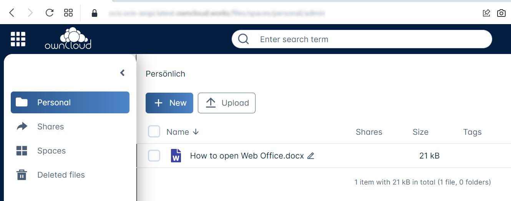
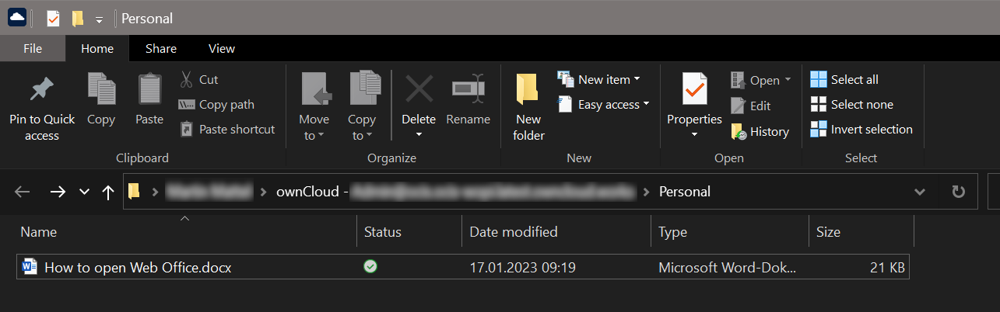
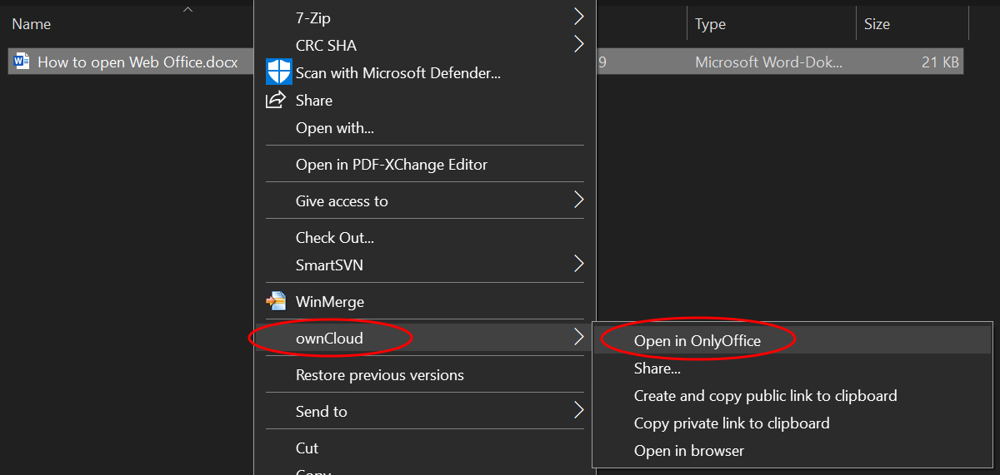
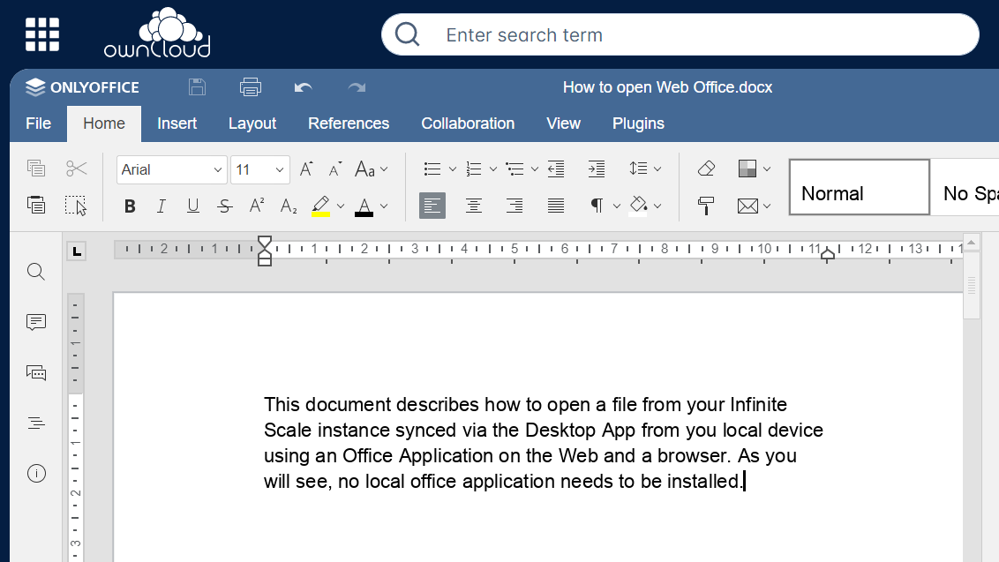

Open Files with Office Web Apps
Introduction
You can open and edit synced files locally using web apps without the need of local app installations. This is very beneficial if:
-
your local environment does not have an office package installed or available,
-
you are collaborating with others on the same document.
When more than one person is working on the same document and using a locally installed application like office, synchronization conflicts may happen if others sync a changed document while someone else is editing it. This can be hard to resolve. When using web apps, collaborative working is managed by the web application and synchronization is no longer an issue.
Prerequisite
-
The user only needs to have a browser installed. No settings need to be made in the Desktop App.
-
The the backend, which is either Infinite Scale or ownCloud Server needs to have been configured accordingly with web apps enabled. The administrator can configure the system for multiple or only particular office file types if available. If web apps are not configured and enabled for all available or particular file types, the functionality is either not available in the context menu at all or only for the configured ones. Contact your administrator for more details.
Open Files via Office Web Apps
The first image shows an office file via the browser, based on the Infinite Scale backend.

This file gets synced by the Desktop App and is locally available.

Right-click on the file to open the context menu and click to select the application available. Note that the web app shown is the one configured by the admin for this file type. If Open in … is not available, web apps have either not been enabled by the administrator at all or not for this file type.

A browser window with the web app selected opens the file. When you are leaving the web app, changed files are saved automatically.

Note that if multiple persons are accessing the same file via the web app, the app may show who has opened the file. Depending on the web app, final saving may occur when the last person accessing a file in the web app closes the web app session or the last tab. This is indicated by the changed modification time. Syncing back will only occur after the file has been saved.